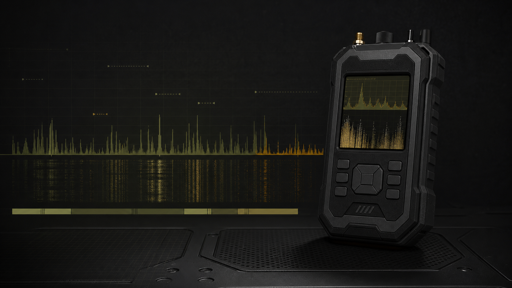

FPV analog
У відповідних діапазонах, якщо відеовипромінювання потрапляє в 1050-6040 МГц.
1050-6040 МГц / актуальна РЕО / VTX
Покриття 1050-6040 МГц без сліпих зон для роботи в актуальній РЕО.

Ефір не стоїть на місці
FPV/VTX мігрують між діапазонами. Детектор, який бачить лише частину спектра, залишає частотні діри там, де борт уже може працювати.
| Частота | Задача / де зустрічається | Ризик для вузькодіапазонного детектора |
|---|---|---|
| 1.2 / 1.3 ГГц | Аналогові відеоканали, нестандартні VTX-конфігурації | Пропуск нижнього діапазону, якщо пристрій сфокусований на 2.4/5.8 |
| 2.4 ГГц | Відеолінки та борти з випромінюванням у підтримуваному спектрі | Сліпа зона для 5.8-only рішень |
| 3.3 / 3.5 ГГц | Перебудовані або менш типові відеоканали | Часто випадає з типових 1.2/2.4/5.8 схем |
| 4.9 / 5.2 / 5.8 ГГц | Поширені верхні ділянки для VTX та частини квадро | Ризик залишається, якщо покриття має розриви між каналами |
Менше сліпих зон
Безперервне покриття 1050-6040 МГц зменшує шанс пропустити нестандартний або перебудований відеоканал у межах підтримуваного спектра.
Без універсальних обіцянок
У відповідних діапазонах, якщо відеовипромінювання потрапляє в 1050-6040 МГц.
За наявності відеовипромінювання у підтримуваному спектрі та відповідній конфігурації борту.
Відеоканали в межах 1050-6040 МГц, включно з менш типовими ділянками.
Частина платформ залежно від відеолінку, потужності передавача та антенної конфігурації.
Детекція залежить від висоти, потужності передавача, антен, рельєфу, зашумленості ефіру та конкретної конфігурації борту.
Порівняння покриття
| Параметр | Наш детектор | Типовий 1.2/2.4/5.8 | Типовий 2.4/5.8 | 5.8-only |
|---|---|---|---|---|
| 1050-6040 МГц | Суцільно | Фрагменти | Фрагменти | Ні |
| 1.2 ГГц | Так | Так | Ні | Ні |
| 2.4 ГГц | Так | Так | Так | Ні |
| 3.3-3.5 ГГц | Так | Зазвичай ні | Зазвичай ні | Ні |
| 4.9-6.0 ГГц | Так | Частково | Частково | Тільки 5.8 |
| Робота з нестандартними VTX | У межах спектра | Обмежено | Обмежено | Вузько |
| Калібрування під місцевість | Так | Залежить від моделі | Залежить від моделі | Залежить від моделі |
| Фільтрація шумів | Так | Залежить від моделі | Залежить від моделі | Залежить від моделі |
| Робота поруч із РЕБ | Передбачено | Залежить від моделі | Залежить від моделі | Залежить від моделі |
| Інтеграція в оповіщення / РЕБ | Передбачено | Залежить від моделі | Залежить від моделі | Залежить від моделі |
| Blackout mode | Так | Залежить від моделі | Залежить від моделі | Залежить від моделі |
| Пеленгація | Зі спрямованою антеною | Залежить від моделі | Залежить від моделі | Залежить від моделі |
Складна РЕО
Пристрій налаштовується під конкретну позицію, рівень шуму та сусідні джерела випромінювання, щоб зменшувати хибні спрацювання.
Режими роботи
Носіння на позиції, у машині або на СП з постійним контролем ефіру.
Фокус на FPV-сигналах у підтримуваному спектрі без зайвого шуму в інтерфейсі.
Визначення напрямку зі спрямованою антеною, якщо така конфігурація використовується.
Робота без світлової демаскації для чергування в темний час.
Тригер або сигнал для зовнішньої системи, якщо інтеграційний контур підтверджений.
Android / PC / USB: [підтвердити підтримувані режими підключення].
Елемент системи
Детектор працює як сенсор у контурі оповіщення, а не як окрема пищалка.
Польова перевірка
Технічні характеристики
| Діапазон роботи | 1050-6040 МГц |
|---|---|
| Підтримувані діапазони | 1.2 / 1.3 / 2.4 / 3.3 / 3.5 / 4.9 / 5.2 / 5.8 ГГц |
| Способи оповіщення | [додати підтверджені способи оповіщення] |
| Акумулятор | [додати тип / ємність після підтвердження] |
| Автономність | [додати підтверджену автономність] |
| Роз'єми | [додати підтверджені роз'єми] |
| Антени | [додати комплектацію антен] |
| Захист корпусу | [додати підтверджений рівень захисту] |
| Вага | [додати підтверджену вагу] |
| Комплектація | [додати підтверджену комплектацію] |
| Опції | [додати доступні опції] |
FAQ
Робочий діапазон: 1050-6040 МГц. Акцент: 1.2 / 1.3 / 2.4 / 3.3 / 3.5 / 4.9 / 5.2 / 5.8 ГГц.
Він закриває ширший спектр і зменшує сліпі зони між типовими діапазонами.
У межах 1050-6040 МГц, якщо відеовипромінювання достатнє для детекції в конкретній РЕО.
Так, сторінка передбачає налаштування порогів, фільтрацію шумів і калібрування під позицію.
Так, передбачено можливість відключення діапазонів, які заважають роботі в конкретному ефірі.
Так, передбачено Blackout mode для роботи без світлової демаскації.
Від висоти, потужності передавача, антен, рельєфу, зашумленості ефіру та конфігурації борту.
[додати підтверджені варіанти зовнішніх антен і роз'ємів]
Так, сторінка позиціонує пристрій для позицій, СП, КСП, екіпажів техніки та мобільних груп.
Конфігурація під задачу
Отримайте консультацію по конфігурації під вашу задачу, діапазони та РЕО.